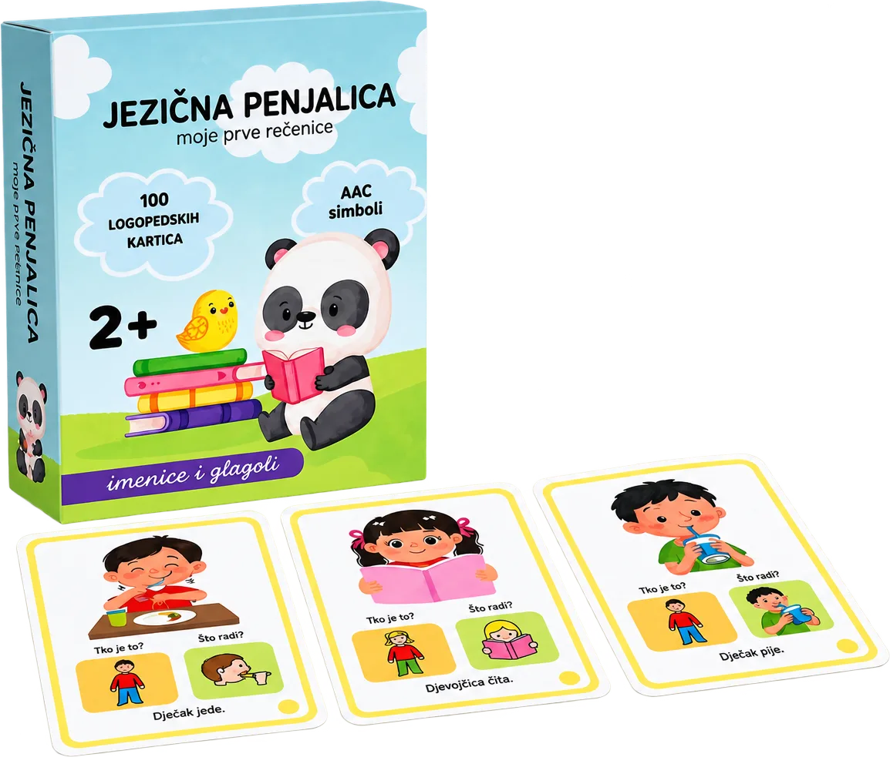

{{ b.k }}
{{ b.t }}
Suvremena podrška terapiji
Oprema koju biramo prema potrebama djeteta.
U logopedskom radu koristimo suvremenu i specijaliziranu opremu te stručno odabrane didaktičke i edukativne materijale koji nam omogućuju prilagodbu terapije individualnim potrebama svakog djeteta. Ne koristimo ih kao cilj same terapije, već kao podršku individualno postavljenim terapijskim ciljevima.
{{ o.n }} · Oprema
{{ o.title }}
{{ o.t }}
{{ o.d }}

Materijali izrađeni u SANO centru
Pogledaj materijale →
Jezična penjalica i ostali didaktički materijali koje koristimo u terapiji.